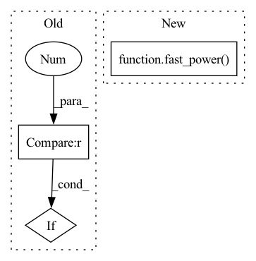

Pattern ID :20513

Before Change
for d in derivative:
output.append(fns[d]())
if len(derivative) == 1:
return output[0]
else:
return output
After Change
elif derivative > 0:
rn = fast_power(R, bas_n)
nabla_rn = (bas_n * R**(bas_n - 2)).unsqueeze(-1) * xyz
er = torch.exp(-bas_exp * R**2)
nabla_er = -2 * (bas_exp * er).unsqueeze(-1) * xyz
In pattern: SUPERPATTERN
Frequency: 3
Non-data size: 3
Instances
Fragment ID: 66339398
Project Name: nlesc-jcer/qmctorch
Commit Name: 1637f0d53fb2a5f7e5a8c58b5dd47eca8e885164
Time: 2020-06-04
Author: nicolas.gm.renaud@gmail.com
File Name: qmctorch/wavefunction/radial_functions.py
M Class Name: AnonimousClass
N Class Name: AnonimousClass
M Method Name: radial_gaussian(6)
N Method Name: radial_gaussian(6)
M Parent Class:
N Parent Class:
M File Name: qmctorch/wavefunction/radial_functions.py
N File Name: qmctorch/wavefunction/radial_functions.py
M Start Line: 109
M End Line: 128
N Start Line: 89
N End Line: 123
'>
Before Change
if derivative == 0:
if bas_n.max() < 3:
rn = fast_power(R, bas_n)
else:
rn = R**bas_n
After Change
elif derivative > 0:
rn = fast_power(R, bas_n)
nabla_rn = (bas_n * R**(bas_n - 2)).unsqueeze(-1) * xyz
er = torch.exp(-bas_exp * R**2)
nabla_er = -2 * (bas_exp * er).unsqueeze(-1) * xyz
'>
Fragment ID: 66339399
Project Name: nlesc-jcer/qmctorch
Commit Name: 7d3fc0cc5ae8ad7f86e064842b49b8289e6fc151
Time: 2020-05-22
Author: nicolas.gm.renaud@gmail.com
File Name: qmctorch/wavefunction/radial_functions.py
M Class Name: AnonimousClass
N Class Name: AnonimousClass
M Method Name: radial_gaussian(6)
N Method Name: radial_gaussian(6)
M Parent Class:
N Parent Class:
M File Name: qmctorch/wavefunction/radial_functions.py
N File Name: qmctorch/wavefunction/radial_functions.py
M Start Line: 95
M End Line: 106
N Start Line: 88
N End Line: 95
'>
Before Change
for d in derivative:
output.append(fns[d]())
if len(derivative) == 1:
return output[0]
else:
return output
After Change
if derivative == 0:
return fast_power(xyz, k, mask0, mask2).prod(-1)
elif derivative == 1:
'>
Fragment ID: 66339400
Project Name: nlesc-jcer/qmctorch
Commit Name: 6e7d0d79be15381fa2703a929374c186832b8f99
Time: 2020-06-04
Author: nicolas.gm.renaud@gmail.com
File Name: qmctorch/wavefunction/spherical_harmonics.py
M Class Name: AnonimousClass
N Class Name: AnonimousClass
M Method Name: CartesianHarmonics(6)
N Method Name: CartesianHarmonics(6)
M Parent Class:
N Parent Class:
M File Name: qmctorch/wavefunction/spherical_harmonics.py
N File Name: qmctorch/wavefunction/spherical_harmonics.py
M Start Line: 148
M End Line: 163
N Start Line: 110
N End Line: 223